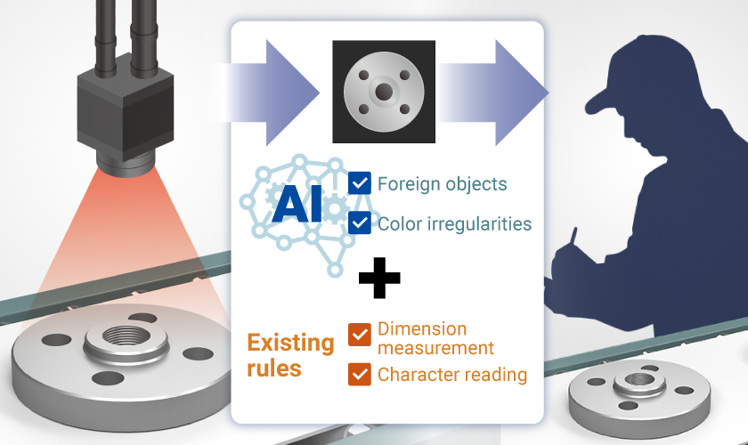
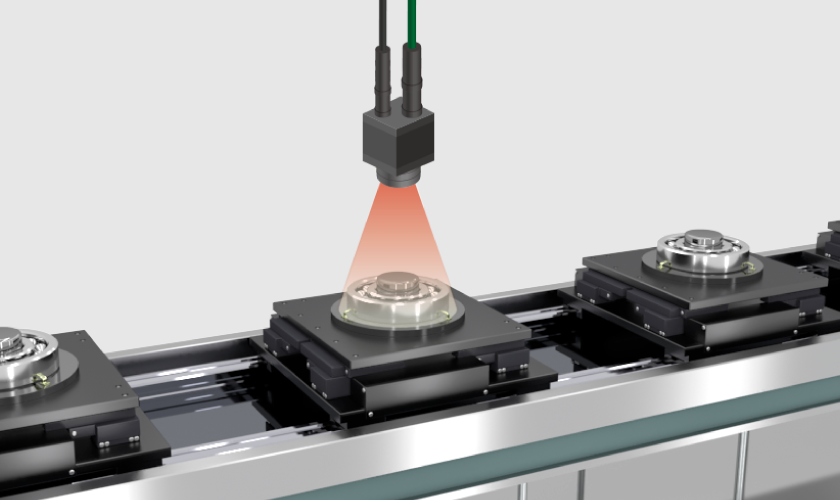
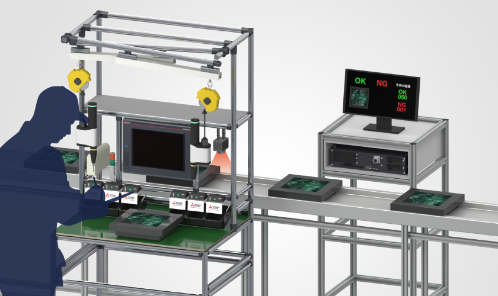

Products
MELSOFT VIXIO

MELSOFT VIXIO application examples
Here are some application examples of MELSOFT VIXIO.
CASE1
Combination of rule-based and AI-based inspections improves the accuracy of the inspection process
Before
Rule-based-only inspection
When rule-based inspection is applied to items for which rules are difficult to define, numerous mis-detections occur.
After
Combination of rule-based and AI-based inspections
Introducing MELSOFT VIXIO AI inspection and using it together with existing rule-based inspection improves inspection accuracy.
CASE2
AI replaces primary screening by human eyes, reducing time and equalizing inspection quiality
Before
Sorting by human eyes and detailed inspection of defective products
Products identified as “possible defectives” by human eyes in the primary sorting must be also checked by the person in charge of quality assurance, which requires task labor.
After
Perform primary screening with AI
Checking products identified in primary screening based on AI judgment results (heat map) reduces task labor.
CASE3
Reduce inspector workload by combining human and AI inspection
Before
Visual inspection process (by human eyes) by only one person
One person in charge of inspection visually checks all products, which leads to overlooking of defective products due to heavy workload.
After
Double check by AI and human eyes
The introduction of double-checking reduces the risk of overlooking defective products and ensures consistency of quality between operators.